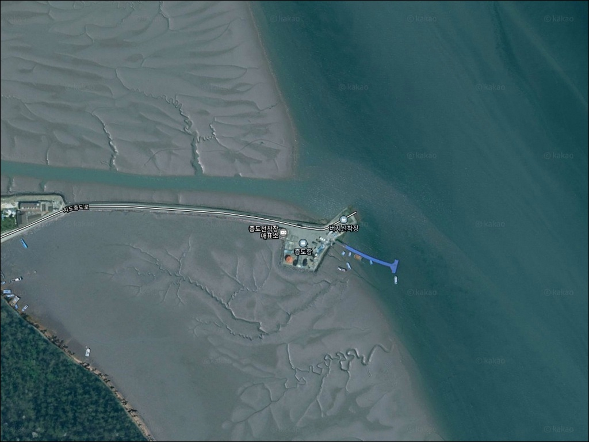
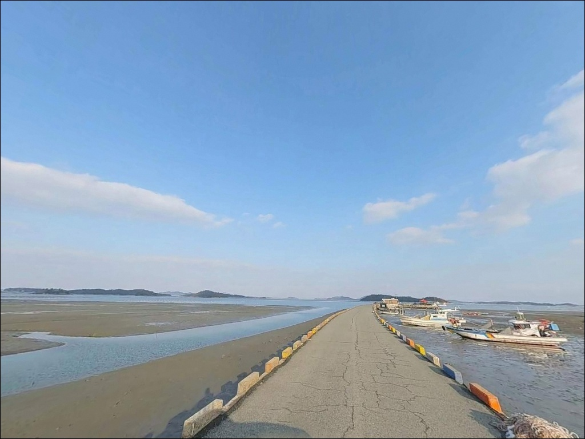
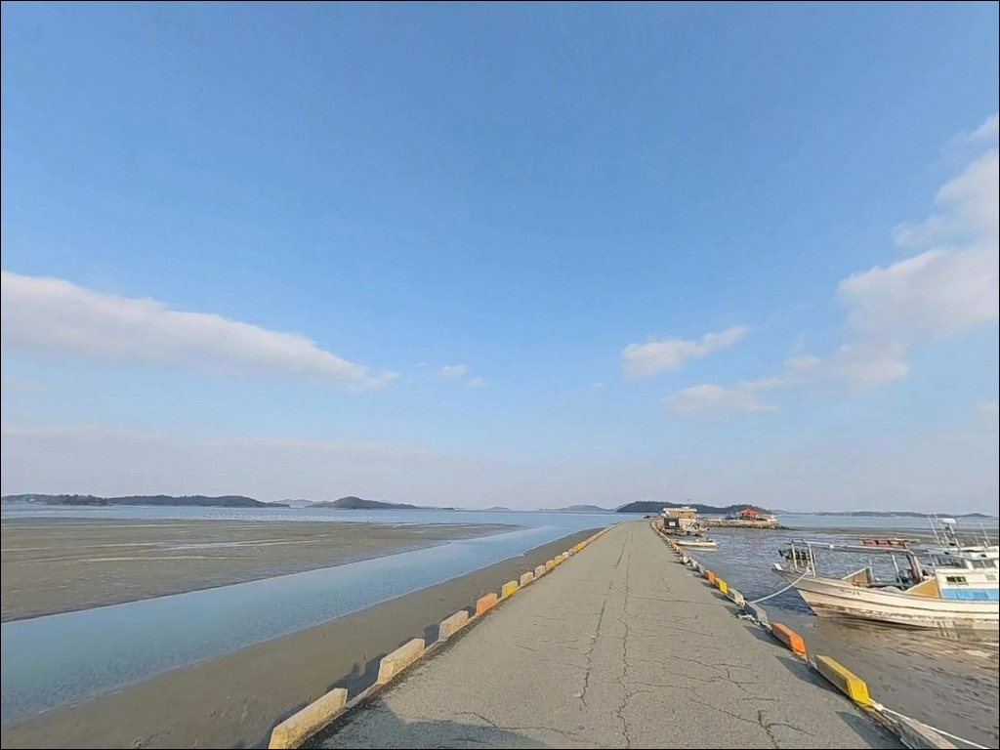
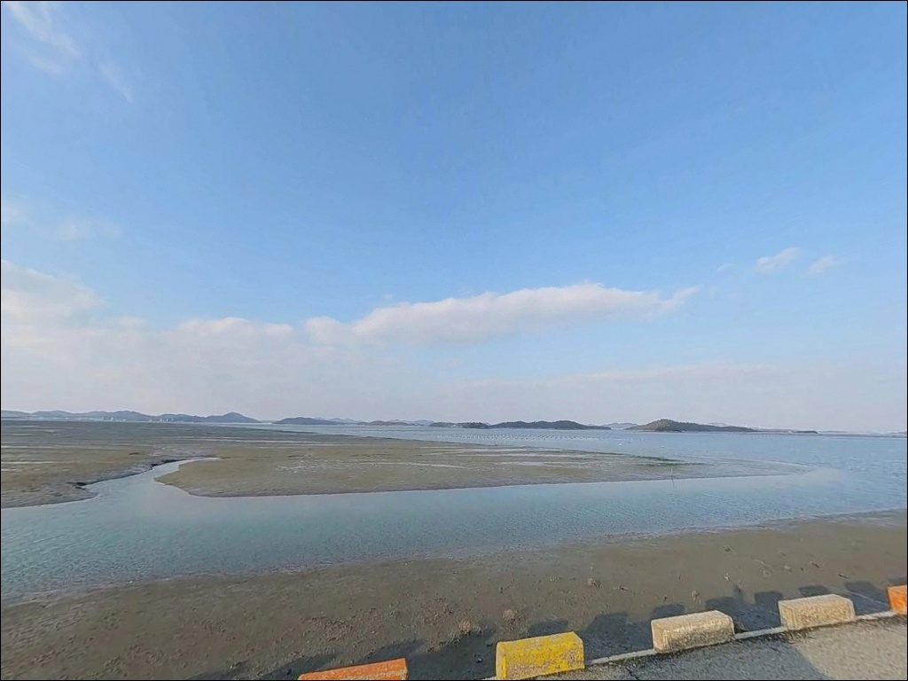
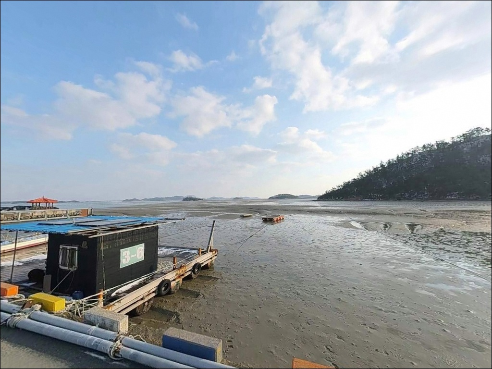
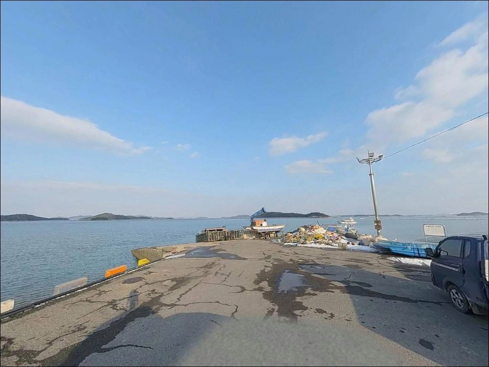
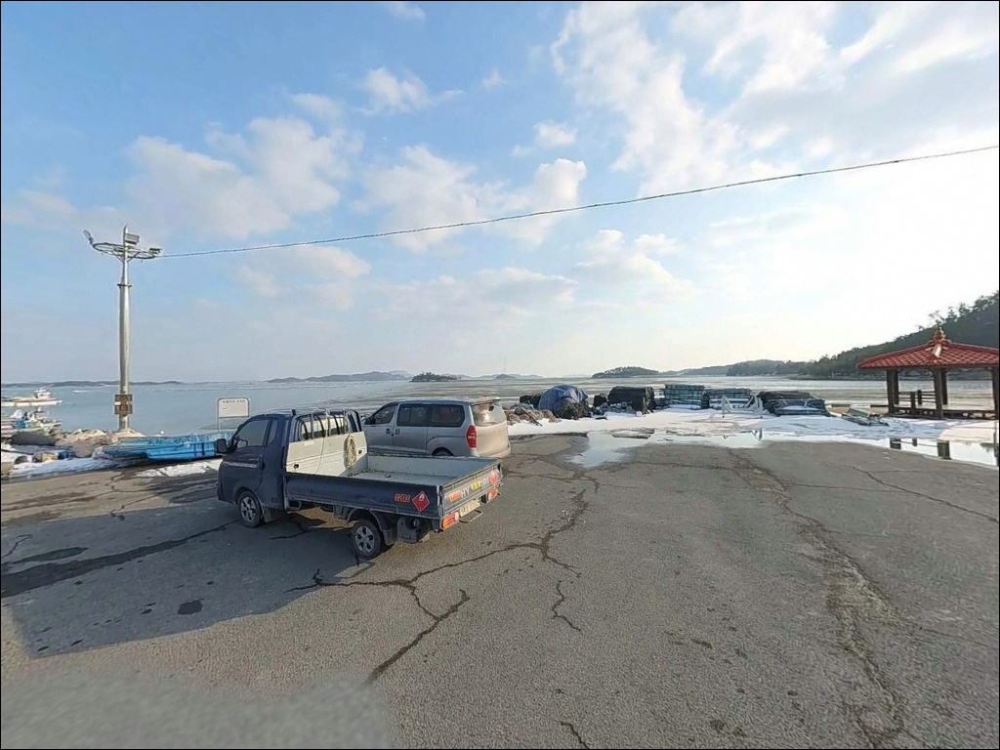
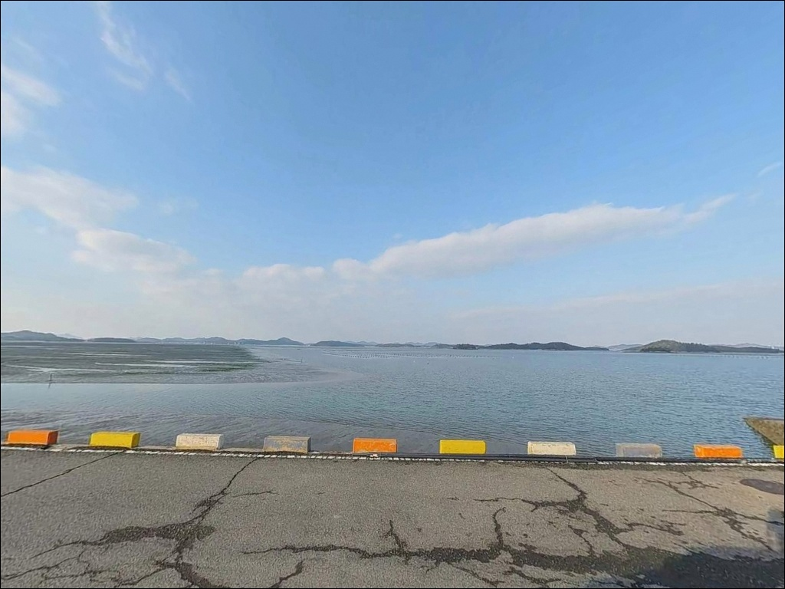
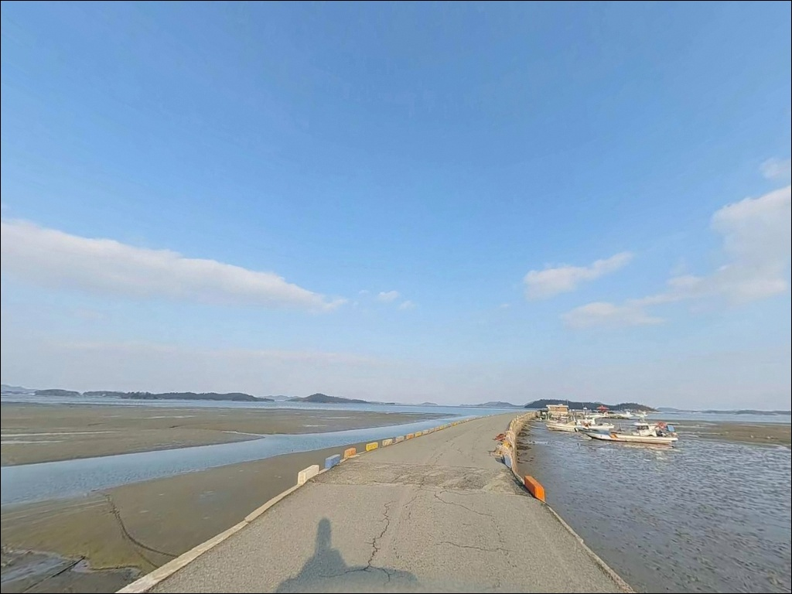

증도항, 증도 전남 신안군 잔잔한 물결과 어울리는 차박, 낚시 한적한 포인트
이 페이지에는 광고(제휴 링크 포함)가 있으며, 광고 링크를 통해 구매하면 운영자가 판매 수익 또는 수수료를 받을 수 있습니다. 포인트 사진: 카카오맵 스카이뷰·로드뷰. 이 페이지의 지도·사진 이미지는 카카오맵의 실제 서비스 이미지와 다를 수 있습니다.


포인트 안내
증도항
전남 신안군 증도면 대초리 1648-9
간조 시 서해 갯벌이 드러나는 증도항에
물때 확인 없이 진입하면
채비를 던질 수심 자체가 사라집니다.
만조 전후를 놓치면
아무리 좋은 포인트도 갯벌 위에
서 있는 것과 다르지 않습니다.
전남 신안군 증도면 대초리에 자리한 증도항은
2010년 증도대교 개통 이후
차량 접근이 가능해진 서해 도서 항구입니다.
유네스코 생물권 보전지역이자 람사르 습지로
지정된 증도는 섬 전체가 갯벌 생태 환경을
중심으로 형성된 곳입니다.
이 글은 증도항의 지형 조건, 물때 판단 기준,
진입 동선과 차박 여건,
낚시 스타일별 공략 방향에 집중합니다.
조황 단정이나 특정 어종 보장은
이 글의 범위에 포함되지 않습니다.

1. 진입 동선과 포인트 접근성
증도대교를 건너 섬에 진입한 뒤
대초리 방향 도로를 따라가면
증도항에 닿을 수 있습니다.
진입로는 포장도로로 연결되어 있으며,
소형~중형 차량 기준으로는 접근에 어려움이 없는 수준입니다.
태평염전과 솔트레스토랑 등
관광 시설이 같은 대초리 구역에 있어
도로 정비 상태는 나쁘지 않은 편입니다.
주차는 항 입구 공터나 물량장 주변
도로변을 활용하는 방식이 일반적입니다.
소형 항구 구조상 넉넉한 주차 공간을
기대하기는 어렵고,
어선 작업 동선을 막지 않는 자리가
기본 매너입니다.
항 내부에서 회차는 가능하지만
공간이 여유롭지 않아
대형 차량은 진입 전 동선을 미리 파악해 두는 편이 좋습니다.

2. 차박 환경과 야간 체류 여건
증도항은 슬로시티로 지정된
관광 중심 섬이라는 특성상
야간에도 관광객과 차량 통행이
어느 정도 이어지는 환경입니다.
프라이버시가 낮은 개방형 구조이며,
항구 주변 민가와 관광 시설이 혼재해 있어
완전한 고립형 차박 여건은 아닙니다.
야간 조명은 마을 중심부에 집중되어 있고
항 끝단으로 갈수록 어두워지는 편입니다.
낚시를 마치고 잠깐 쉬어가는
단기 대기형 활용이 현실적이며,
하룻밤 온전히 머무는 차박을 원한다면
우전해수욕장 인근 주차장이 더 여건이 낫습니다.
증도는 유네스코 생물권 보전지역이자
갯벌도립공원 구역을 포함하고 있습니다.
야영이나 취사를 계획한다면
출발 전 신안군청 또는
관련 기관에 구역별 허용 여부를
먼저 확인하는 것이 필수입니다.


3. 주변 편의시설 및 인프라 현황
증도항에서 차량으로 수 분 거리에는
태평염전 관광지와 솔트레스토랑이 있습니다.
관광 시설 중심으로 운영되는 곳이라
식사 목적이라면 대초리 일대를
활용할 수 있는 편입니다.
반경 3km 내에는 짱뚱어해변과 민박, 펜션 등
관광 인프라가 분포합니다.
다만 낚시용품점이나 편의점, 주유소에 관한
확정 정보는 섬 내에서 확보하기 어렵습니다.
증도대교를 건너기 전
신안군 지도읍 일대에서
미끼, 채비, 식수, 연료를 갖추고
입도하는 것이 현실적인 준비 방식입니다.
응급 상황 발생 시에는
육지까지 거리가 상당합니다.
비상약품, 수분, 연료는
출발 전에 충분히 챙기는 것이 기본입니다.

4. 물때를 모르면 답이 없는 포인트 — 방문 전 준비사항
증도항에서 방문 전 가장 먼저 확인할 것은
물때입니다.
서해 갯벌 지형은 간조 시 수심이 급격히 줄어들어
채비가 바닥에 닿거나 낚시 자체가 불가능해지는
상황이 생깁니다.
바다타임에서 증도 인근 기준 물때를 확인하고,
만조 전후 2~3시간을 공략 타이밍으로 잡는 것이
이 포인트의 기본 전략입니다.
증도는 람사르 습지 및 갯벌도립공원 지정 구역입니다.
갯벌에 직접 진입하거나 채취 행위를 할 경우
관련 규정이 적용될 수 있습니다.
낚시는 방파제와 선착장 구조물 위에서
이루어지는 방식으로 계획하는 편이 안전합니다.
섬 지역 특성상 기상 변화가 빠르고
신안 서해안은 안개와 조류 변동이 심한 날이 있습니다.
출조 당일 아침에 기상청 예보를 다시 한번 확인하고,
구명조끼와 헤드랜턴은 반드시 챙겨야 합니다.
채비 손실도 잦은 편이라 여분 채비를 넉넉히 준비하는 것이 좋습니다.

5. 지형 기반 낚시 여건 분석
증도항이 자리한 대초리 일대는
섬 북동측에 해당하며,
주변은 갯벌과 수로가 발달한 서해 내만형 지형입니다.
항 구조는 방파제와 물량장이 조합된 형태로,
방파제 끝단과 항 입구 수로 방향이
핵심 공략 구간입니다.
증도항은 서해 갯벌 지형 특성상
물때를 맞추지 않으면 낚시 자체가 불가능해지는 구조입니다.
간조 시에는 수심이 급격히 낮아지고,
들물이 차오르는 만조 전후 2~3시간 동안
조류 흐름이 살아나면서
어종 활성도도 함께 높아집니다.
물이 들어오는 타이밍을 기준으로
자리를 잡는 것이 이 포인트의 핵심 판단입니다.
방파제 끝단은 내항보다 조류 변화가 크고
수심이 깊어 루어와 원투낚시 모두 대응 가능한 자리입니다.
항 입구 수로 방향은 조류가 지나는 길목 역할을 하며
회유성 어종이 드나드는 구간이기도 합니다.
바닥은 갯벌과 돌이 혼합된 구조로
채비 손실 가능성이 있습니다.
최신 조황은 출조 전에 꼭 검색해 보시기 바랍니다.


6. 증도항 지형에 어울리는 낚시 스타일
이 포인트에서 가장 잘 맞는 방식은
원투낚시입니다.
만조 전후 들물 타이밍에 외항 방향으로
채비를 멀리 던져 수로를 공략하는 방식이
갯벌 지형 구조와 잘 맞습니다.
붕장어 야간 원투는 서해 항구형 포인트에서
기대해 볼 수 있는 조합입니다.
갑오징어 에깅도 이 포인트에서
시도해볼 만한 방식입니다.
방파제 끝단과 수로 경계 구간은
에기 채비가 움직이기 적합한 조류 조건을 갖추고 있으며,
가을부터 초겨울 사이가 이 일대
갑오징어 활성 시기에 해당합니다.
물량장 석축 구간에서는
숭어 훌치기낚시가 가능한 구조입니다.
서해 항구형 포인트에서 공통적으로
나타나는 패턴으로, 채비가 간단하고
만조 전후 집중 공략이 가능한 방식입니다.
조류가 흐를 때 선착장 끝에서
루어를 짧게 끌어오는 방식도 함께 운용할 수 있습니다.

7. 대안 포인트와 플랜 B 동선
증도항 조류가 여의치 않거나
주차 공간 확보가 어려울 때
가장 먼저 이동할 곳은
증도 내 검산 방파제입니다.
야간 원투낚시로 알려진 포인트이며
같은 섬 안에서 동선을 옮기기 좋은 대안입니다.
왕바위 선착장은
루어낚시와 삼치 낚시 포인트로
이 일대에서 자주 언급되는 곳입니다.
증도대교 북단 수로 구간도
조류 소통이 있어 다양한 방식으로
공략해볼 수 있는 보조 자리입니다.
우전리 도로 끝 구간은
원투와 갯바위 접근이 가능한 곳이
몇 군데 있습니다.
신안군 전체로 범위를 넓히면
임자도, 사옥도 방파제들이
비슷한 서해 워킹 루어·에깅 패턴으로
공략 가능한 대체 출조지입니다.
차박 여건이 아쉬울 때는
우전해수욕장 주차장이
가장 현실적인 대안입니다.

물때와 갯벌 규정, 두 가지를 알면
증도항이 달라 보입니다
원투낚시나 갑오징어 에깅을 즐기는 낚시인이라면
증도항의 방파제 끝단과 수로 지형은
들물 타이밍에 제법 잘 맞는 구조입니다.
서해 내만형 항구라는 특성상
물때를 맞추는 것이 전부를 결정하는 포인트이며,
정보가 많지 않은 만큼 사전 조황 검색이
어느 포인트보다 중요합니다.
다만 람사르 습지이자 갯벌도립공원 구역인
증도의 특성을 모르고 방문했다가
갯벌 진입 규정에 걸리거나,
야영 허용 여부를 확인하지 않아
차박 계획이 틀어지는 경우가 있습니다.
물때 확인, 규정 사전 점검, 자급 준비,
이 세 가지를 갖추고 간다면
조용한 서해 도서 낚시 포인트로서의
이 항구가 다른 얼굴을 보여줍니다.
편의시설 없이 증도대교를 건너
조류가 들어오는 방파제 끝에 자리를 깔고
들물 두 시간을 기다리는 낚시 여행자라면,
차에서 쉬어가기 좋은 짱뚱어해변 주차장과
함께 묶어두면 낚시와 차박이 자연스럽게 이어지는
출조가 될 수 있는 곳입니다.